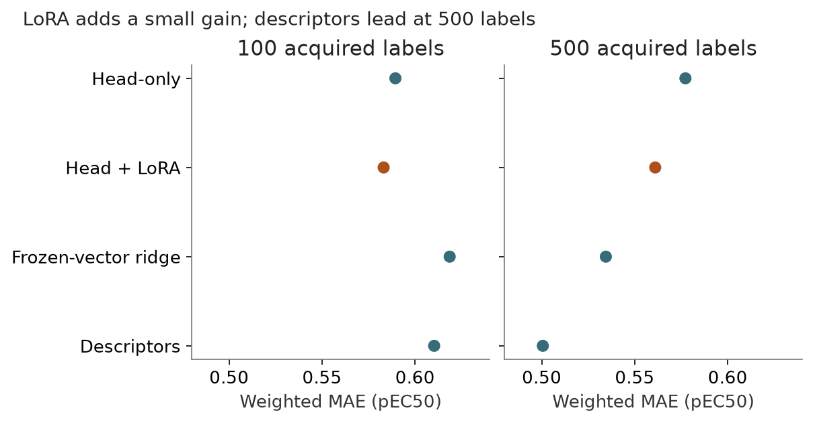

Matched upstream-LoRA predictive comparison
Status: completed · Synthesis updated 2026-09-08. Original dates and immutable protocol history remain in the source evidence.
Question
Does actual upstream adaptation add to the same trained heads?

PNG · SVG · Plotted data · Figure provenance
{kind=link}
{kind=link}
Design and fitted/frozen flow
Both affinity members: pretrained continuous heads [fitted], plus rank-4 LoRA at esm_proj.1/.3 and pairformer_stack.layers.0.transition_z.fc1 [fitted only in LoRA arm]. Main trunk and external ESM encoder frozen. N100=80 FIT+20 CAL; N500=400+100; 40 full-FIT optimizer updates, one draw and seed, no tuning.
Results
All 20 neural fits and 30 control cells completed. N500 pooled weighted MAE: head 0.5773, LoRA 0.5610, frozen ridge 0.5345, descriptors 0.5006. N100 favors LoRA on weighted MAE but not all metrics.
Implication and limits
Low-potency correction supplies most net LoRA-versus-head gain; pEC50 ≥4 weighted error slightly worsens. This fixed training recipe does not exhaust optimization; no fresh holdout.
All evidence is retrospective. Historical budgets, splits and raw versus uncertainty-weighted scores must remain distinct.
Source evidence
Original reports and exact tables (historical report links may refer to unbundled files).